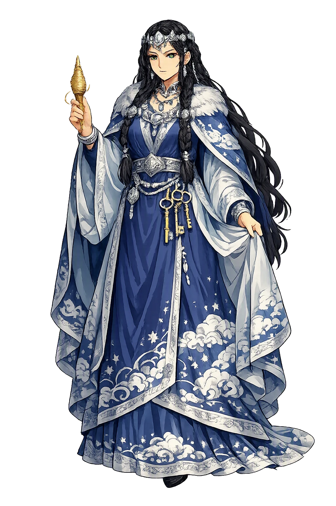
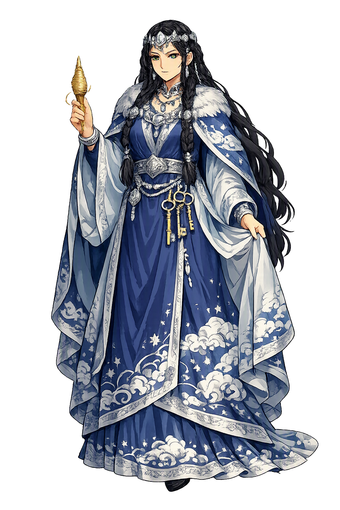

The Authentic Orthography
Marriage, Motherhood, Queenship · Beloved (from *frijjō)

Unicode restoration and ASCII comparison
ᚠᚱᛁᚴᚴ
The name in its original Norse form. Frigg (ᚠᚱᛁᚴᚴ) is attested in the source tradition — “Beloved (from *frijjō)”. Its original diacritics and script distinctions carry the full phonetic and orthographic weight of the source tradition.
frigg
The plain frigg form is identical to the Unicode restoration. Because this name is already written in Latin letters, no diacritics, stress, or script information were lost — only capitalization differs.
Frigg
The Unicode restoration does not need to recover lost marks for Frigg. Its value is canonical spelling and consistent cataloguing, not the reconstruction of erased orthography. The domain is readable as-is to both DNS and humanity.
Frigg.com → frigg.com
The non-ASCII characters in Frigg are encoded while the ASCII remains visible. To the DNS, it is Punycode. To humanity, it is Frigg.
How Frigg travels from ancient script to the modern URL
Owned, ideal, and ASCII forms of Frigg
Frigg
Restores ᚠᚱᛁᚴᚴ. The full Unicode restoration. frigg.com is not in the PuniCodex collection — it is watched for release; if it drops, this temple upgrades to an owned flagship.
How Frigg was spoken
Marriage, Motherhood, Queenship — and the Oath That Missed One Twig
Frigg is the foremost of the ásynjur: daughter of Fjörgynn, wife of Óðinn, mother of Baldr. Her hall is Fensalir, the fen-halls, where she wept for her slain son; her gift is the heaviest in the Edda — she knows all fate, and says none of it.
'The fen-halls', Frigg's dwelling — the place Völuspá names when it tells that she wept there over Valhöll's woe.
Frigg's handmaid Fulla, golden-banded, carries her casket, minds her footwear, and shares her secret counsels (Gylfaginning 35).
Frigg's messenger Gná rides Hófvarpnir, 'hoof-thrower', through air and sea on her errands — the queen's word carried between worlds.
Frigga's distaff — Scandinavian folk astronomy's name for Orion's belt, noted by Grimm; the Eddas themselves give her no loom.
Stories of Frigg
Frigg's mythology is the mythology of the one who knew first: the oath she almost completed, the grief she almost prevented, the silence she keeps about everything else.
When Baldr dreams baleful dreams for his life, Frigg does the one thing foresight permits: she fights the future with an oath. She travels the world and exacts from all things — fire and water, iron and every metal, stones, earth, trees, sicknesses, beasts, birds, poison, serpents — the promise that they will not harm Baldr. Only the mistletoe, growing west of Valhöll, seemed too young to demand the oath of. The completeness of the list is the point: Snorri enumerates creation itself, and the myth hangs its whole catastrophe on the one category a mother's thoroughness could not imagine mattering — a plant too young to swear.
Loki, in a woman's shape, comes to Fensalir and draws the single omission out of Frigg herself — she tells the stranger that nothing east or west of Valhöll was left unsworn except one young shoot. When the throw falls and Baldr lies dead, it is Frigg who finds the first voice in the silent hall and asks who among the Æsir will ride to Hel and offer ransom — the grief-struck mother still doing strategy. Völuspá gives her the briefest and heaviest line in the poem: 'Then Frigg wept in Fensalir over Valhöll's woe.' And when Hermóðr rides back from the dead, he carries a gift addressed to her: from Nanna, her son's wife who died of grief on the pyre, a linen robe — one bereaved woman remembering another, out of Hel itself.
The Poetic Edda's flyting gives Frigg her doctrine. When Loki turns his slander on the queen — his taunts are the poem's business, not the tradition's verdict — Óðinn answers for her, and then Freyja speaks the line that defines her: 'Frigg knows, I think, all fate, though she does not speak it.' Snorri repeats the same fact as plain prose in Gylfaginning: she knows the fates of men, though she prophesies nothing. In a pantheon where Óðinn hangs himself for knowledge and buys it with an eye, his wife simply has it — and her power is exactly her refusal to spend it.
The prose frame of Grímnismál shows Frigg playing and winning the household's long game. Óðinn and Frigg foster two shipwrecked princes, Agnarr and Geirröðr; Óðinn backs Agnarr, Frigg backs Geirröðr, and Geirröðr takes the throne. When Óðinn boasts of his foster-son's hospitality, Frigg calls it false — Geirröðr starves his guests — and the wager is laid. She then sends Fulla to warn the king that a dangerous wizard is coming, easily known because no dog will leap at him. Óðinn arrives, is seized, and hangs tortured between two fires for eight nights — outmaneuvered by his own wife, until Geirröðr's young son brings him the horn and the whole poem of Grimnir's sayings pours out. It is the one myth where the queen moves the plot against the Allfather, and she wins the move.
The goddess's clearest continental appearance is Latin and eighth-century. Paul the Deacon tells how the Winnili, few and threatened by the Vandals, were claimed by Godan (Óðinn) for his enemies' demand of tribute. Frea, Godan's wife — the Langobardic form of Frigg — counselled them: at sunrise the Winnili women were to let down their hair around their faces like beards and stand with their husbands. At dawn Frea turned Godan's bed toward the east and woke him; he looked out, saw the bearded women, and asked, 'Who are these longbeards?' And Frea answered: you have given them a name — now give them the victory. Godan granted both, and the Winnili became the Langobardi. The tale is an origin-legend, but it is also proof that the migration-age mainland knew a goddess Frea at Godan's side, counsellor and kingmaker, centuries before the Icelandic Eddas wrote her as Frigg.
Frigg is the patron of the knowledge that cannot be used. She knows all fate and speaks none of it — not from coldness, but because the Edda understands what foresight costs: she sees the mistletoe coming and still must live the days before it falls. Her one permitted weapon is thoroughness, and she wields it to the limit of the world — fire, water, iron, stone, sickness, serpent, all sworn — and the future enters through the single twig too young to swear. What the tradition leaves her is not failure but a harder thing: the discipline of the one who knows. Every keeper of unwelcome certainty — the parent who sees, the friend who cannot say, the expert whose warning would only spread the panic — works in Fensalir, keeping counsel with a knowledge that has nowhere to go.
Enter Extended Lore